The Online Form Designer has a control toolbar that contains all of the BP Logix controls you need to build complex Forms. The generic process for adding controls to a Form is addressed in the Adding Form Controls topic, but, for now, let's address the different controls that are available in the Online Form Designer.
The first seven controls on the toolbar are the Basic Controls. These seven controls are the most commonly-used controls on a Form. and their configuration properties are listed in the Basic Controls topic.
To the right of the basic controls, there are dropdown menus that contain the remainder of the available form controls. Each dropdown menu groups a specific category of control tools for inserting controls onto the template. You can view the documentation for all of the tools available in each dropdown menu by using the Table of Contents on the upper right corner of the page, or by clicking one of the links below.
Input Controls: Controls that are commonly used to collect data, but are a bit less widely used than the basic controls.
Other Input Controls: Additional Input controls, consisting mainly of the different content picker controls.
Actions: These controls enable you to control form actions, like placing buttons, or choosing objects via a picker,
Other Controls: Controls that perform miscellaneous tasks like adding HTML content, or labels.
Layout: Controls that are used to govern the control layout for the template, such as tabs and sections.
Responsive Layout: Controls that implement Bootstrap form layout objects.
Arrays: Controls that enable to you create and control arrays on the Form.
Attachments: Controls that enable you to add and show attachments, such as documents or images, to the Form.
Form Control Tags: In addition to the predefined controls that are presented in the Online Form Designer, you can use System Variable syntax to add controls to a form. While the Form Control system variables are only shown as text in the Form's design view, and do not have a visual placeholder like the Form control tools that are available in the UI, these control tags will be converted to the actual controls when they are presented to the user at run-time.
Several of the controls in the Online Form Designer have color properties for setting text colors, background colors, etc. A color picker is provided to enable you to configure these color properties.

If you know the hexadecimal HTML color, you can type it directly into the property box, but in most cases, you'll click the Choose button to invoke the color picker.

As you move your mouse over the colored tiles. the Highlight box will display the color over which your mouse is currently hovering. When you click on a colored tile, the Selected Color box will display the color you select, while the text box below the Selected Color box will display the Hexadecimal HTML color you've selected. Once you've selected a color, you can save the color and close the dialog box by clicking the OK button. When the dialog box closes, the color you've selected will appear in the appropriate color property.

Many Form controls have an Icons tab as part of the control's configuration. Icon usage can be ubiquitous in a Process Director Form, and can make your Forms look more attractive.

The following properties are configurable from a control's Icons tab.
The foreground color of the icon. You can choose the color from the Color Picker, or type in a HTML Hexadecimal color manually, e.g., "#FFFFFF".
The background color of the icon. You can choose the color from the Color Picker, or type in a HTML Hexadecimal color manually, e.g., "#FFFFFF".
Every icon in Process Director has an ID number that can be accessed from the Icon Chooser. If you know that ID number, you can enter it here. If you don't know the ID number, you can find it using the Icon Chooser. Picking the icon from the Icon Chooser will automatically enter the Icon Number in the text box.
The tooltip to display when a user mouses over the icon.
The size, in pixels, to use for the icon. This is an optional property, as the icon will show in a standard size if this property is left blank.
The default display for the icon is to show the icon on the left side of the control. Checking this box will display the icon on the right side of the control.
By way of example, a sample Icons tab configuration is shown below.
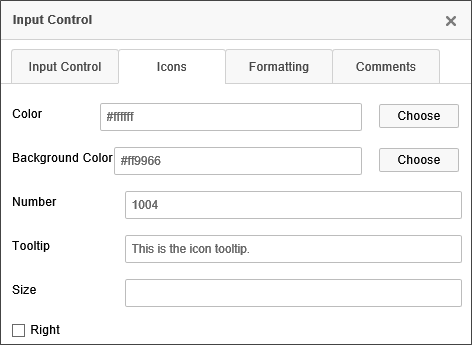
Using this configuration, the field will look like the example below when the Form runs.
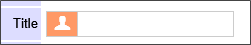
In addition to the using the Icons tab to apply icons to a Form control, you can insert standalone icons onto the Form page by using the Icon Control or Icon System Variable.
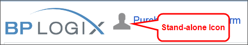
For Process Director v6.0.300 and higher, Field properties can be copied between controls in the Online Form Designer. This feature makes it possible to apply settings for visibility, enabling, etc., to be copied from a field to another, to help ensure that the fields that require the same property settings can be configured more easily. Two new dropdown menu items, Copy Field Properties and Paste Field Properties menu items are available from the context menu that appears when you right click a control on the design surface.
In this example, a Form has two controls. This first control is a Checkbox that has been set as an Event Field, and which has an enabling condition applied.
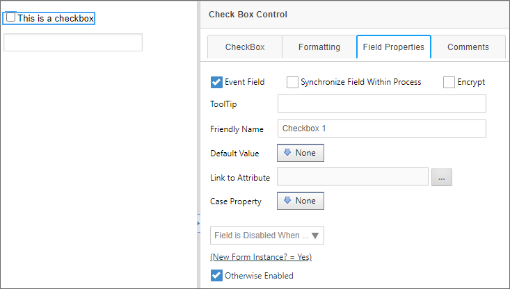
Immediately below it is an Input control, which has no Field Properties set.
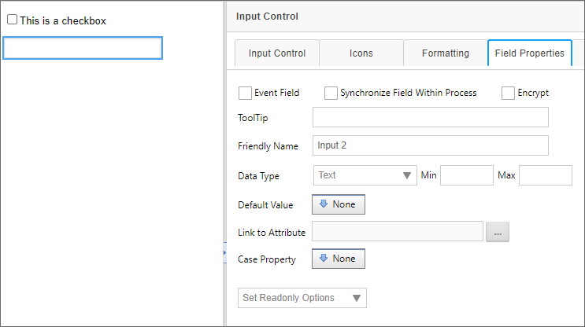
To copy the properties from the Checkbox control to the Input control, first right-click on the "plus" icon for the checkbox control. A context menu will appear that has the Copy Field Properties menu item displayed.
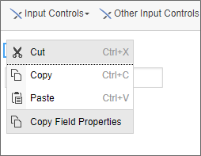
Select the Copy Field Properties menu item. Once you've done so, you can select the Input control and, once again, right-click the control's "plus" icon. This time, and additional menu item, Paste Field Properties, will appear.
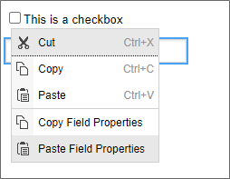
Click the Paste Field Properties menu item. When you do so, the properties will be copied from the Checkbox to the Input control's Field Properties tab.
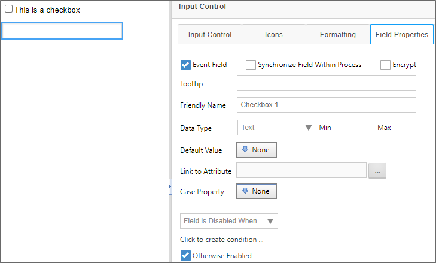
Please be aware that, once the properties are pasted, the field properties are erased from memory. To copy the same properties from the Checkbox to another control, you'll need to copy the control properties again, before pasting them to another control. You cannot copy once and then paste the properties multiple times. Only one paste operation per copy is allowed.
By default, the Online Form Designer does not enable you to apply different formats to ordered or unordered lists using the text formatting tools built into the toolbar. You can, however, insert a DIV into the form by clicking the Div tool on the Online Form Designer's toolbar:
When clicked this tool will present a Properties dialog box for configuration.
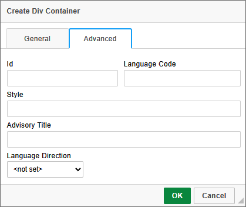
On the Advanced tab of the dialog box, you can use the Style property to specify the desired CSS style for the contents of the Div tag. You can then click the OK button to create the DIV tag on the form. By default dig tags do not appear in the UI. In order to see them, you'll need to click on the Show Blocks tool.
This is a toggle control that turns the visibility for DIV elements on and off. Once toggled on, the Div tag will appear on the Form.
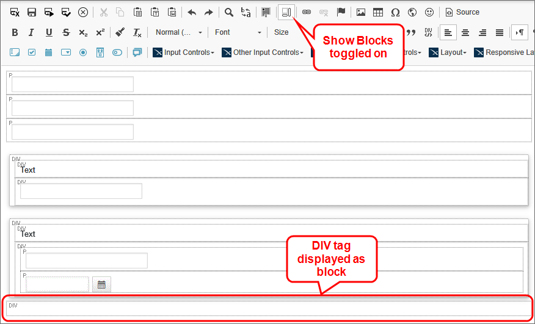
The style you specified for the DIV tag will be displyed in all text, including ordered or unordered lists, that you create inside the DIV tag. For example, setting the Style property to color:red; will result in the following display for the text:
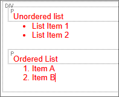
To open the Properties dialog box for the DIV tag to change it's properties, simply right-click inside the Div Tag, and select Edit DIV from the pop-up menu.
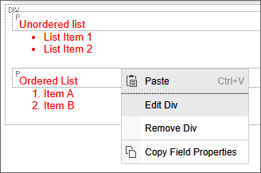
Once the Properties dialog box reopens, you can alter the Style property as desired.
Beyond the use of the DIV tag for lists as shown here, you can insert DIV tags to perform many other special formatting actions for specific parts of a Form.